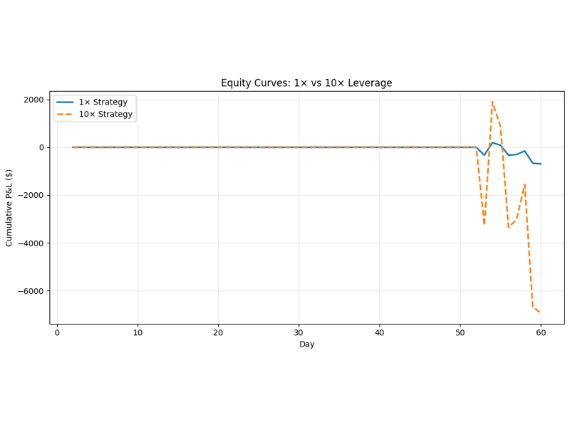
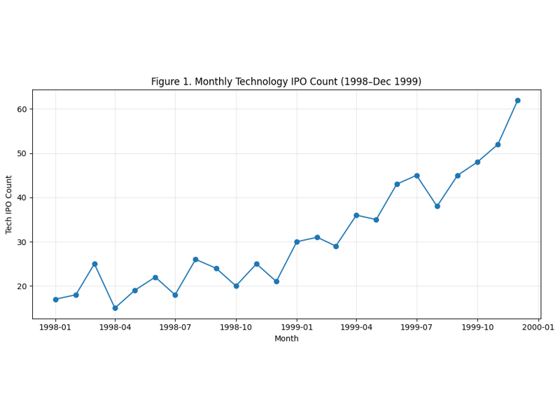
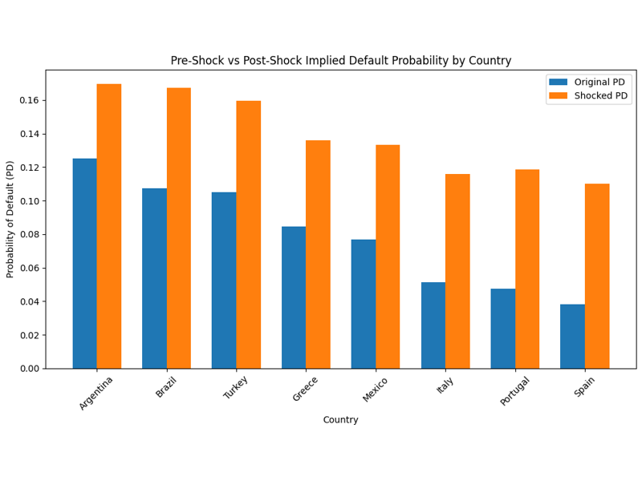
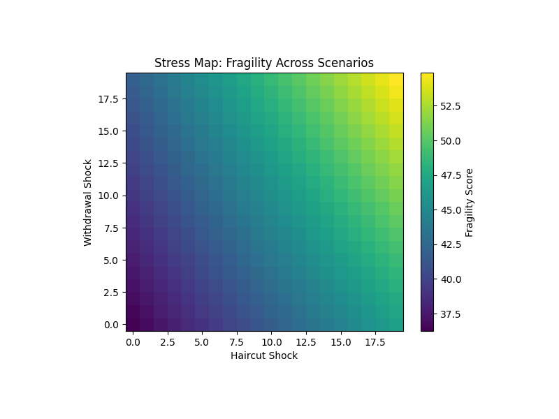

03 — ACADEMICS / FINANCIAL ANALYTICS
Financial Analytics
Coursework from AD561 at Boston University — financial fragility, leverage, bubbles, sovereign and bank risk, and a stress-test case study of FTX's collapse.

Simulated Markets & Leverage
Building a small simulated market and a simple trading rule, then adding 10× leverage, a survival rule and a shock.

Bubbles: Dot-Com & Mortgage Credit
An investment call on the late-1990s dot-com boom and a risk ranking of two 2006 mortgage-backed deals, comparing the warning signs.

Sovereign Risk & Bank Fragility
Implied default probabilities, shock scenarios and bank stress tests, with two interactive tools you can try on the page.

FTX: Fragility & Stress Testing
A custom fragility metric for the FTX balance sheet, a stress map, a 5,000-run Monte Carlo simulation and a breaking-point analysis.